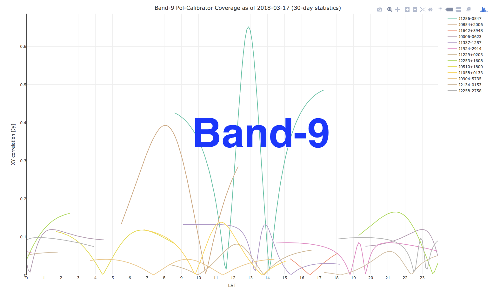

AMAPOLA is a set of CASA-friendly Python scripts for ALMA polarimetry. It is capable to reduce full-Stokes polarimetry of Grid Survey observations, calibrator survey executions, and spectral-line polarimetry. The script involves D-term matrix solution without omitting D2 terms and employs Müller matrix determination of Stokes parameters with D-term correction. |
|  |
Instruction for the XY cross correlation plots
Ordered by polarized flux density
These measurements are only for planning. DO NOT USE them for science publications!
Link to Flux.Rdata, a data frame readable with the R statistical language. In R, it is also accessible by the command:
load(url("https://www.alma.cl/~skameno/AMAPOLA/Flux.Rdata"))
then the data frame "FLDF" records all of Stokes parameters.
|
|
|
|
||||||||||||||||